Lighting Design for Machine Vision Applications
Abstract:
Low-level image processing is an essential first step in any machine vision
application. Low-level vision processing tasks need good lighting
in the work environment for them to function robustly. Hence,
good and uniform illumination from external light source
is essential for machine vision applications to function.
In this paper we suggest
a design procedure to obtain uniform illumination on the scene being imaged
using several light sources. We pose the problem of determining the optimal
position of the light sources as a minimisation problem. Simulation results
shows the effectiveness and suitability of the proposed procedure to illuminate
the scene uniformly.
The selection and placement of cameras and light sources
is one of the most important steps in creating a successful vision system,
because obtaining high-quality images can greatly simplify the vision
algorithms and improve their reliability [5].
Low-level image processing tasks like segmentation are an essential first
component of any machine vision application. The low-level vision tasks operate
on the gray level images and hence are subject to perform differently under
different lighting conditions. There are two ways of taking care of this (i)
make the low-level vision task robust to illumination changes or (ii) have a
controlled illumination using external light source. For real-time
machine vision applications
where time is a major constraint, it is best to choose to have an external light
source to illuminate the scene than to invest important processor cycles into
making the vision algorithm robust to spatial or time variations in ambient
lighting. So external lighting becomes important for
machine vision application.
In machine vision application, good and uniform lighting is
important. Non-uniform illumination by an external light source can
cause more harm than good and fail the segmentation process (Figure
1).
Figure 1(a) shows the
original gray level image captured without any external lighting and Figure
1(b) shows the segmented image obtained using the k-means
segmental algorithm [8]. Similarly Figures 1(c) and
1(d) show the grey level image and the segmented image under
external lighting conditions.
Clearly it can be seen that the scene (Figures 1(c) -
1(d)) is segmented
poorly (wall in the scene is partitioned into different segments)
and the effect of external
lighting is evident in the form of circles and indeed this segmented image
which forms the basis for further machine vision application would result in
the task being performed poorly. While on the other hand the segmentation is
good when there are no external light sources illuminating the scene
(Figures 1(a) - 1(b)).
Figure 1:
Influence of External lighting on segmentation.
| 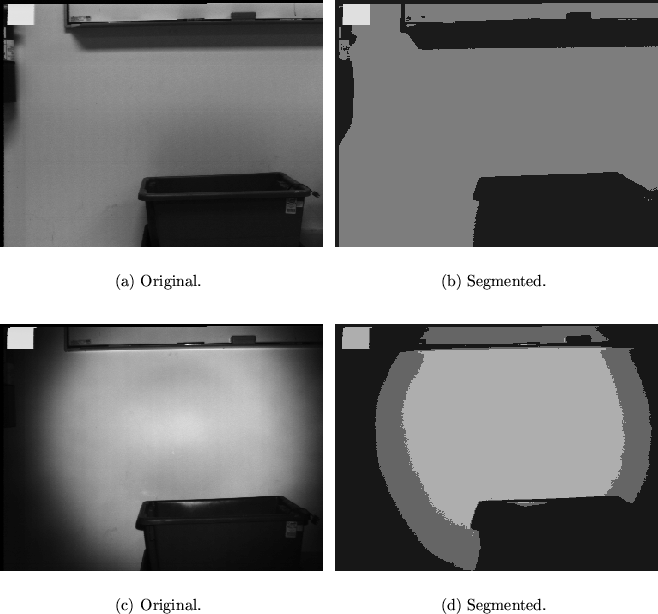 |
Observe that a scene under natural lighting condition is better and correctly
segmented (wall is marked as a single segment) than the same scene which
is subjected to external lighting (compare
Figures 1(b) and 1(d)). While this is true it is also
true that the natural lighting conditions are dynamic and change all the time
and as discussed earlier for a machine vision application where time is crucial
it is not feasible to implement algorithms that are robust to lighting
conditions without burning important computational time.
This motivates us to design procedures to position external light sources
so that the scene is uniformly illuminated.
There has been significant interest in the vision and robotics community in the
more general area of sensor placement
([2,4,6,5,9,12]
to cite a few). Mersch [10] gives an overview of the machine
vision lighting techniques and discusses the most
commonly encountered problems in
machine vision lighting. The issue of light source placement in particular is
discussed in [3,7] while
[11] discusses other important issues related to lighting like
light source efficiency, light divergence, spectral content, source size, and
packaging.
Cowan [3] gives a procedure to automatically place the camera and
the light source to obtain high-quality images for further
processing. The procedure is developed using Computer Aided Design (CAD)
models. Li et. al. [7] use mathematical programming techniques to
determine the optimal sensor and light source positioning. They define the
optimal sensor
and light source positions to be the placement of camera and light
source that produces
images which have minimum variance in
the desired measurement. They assume that the vision task is
specified in terms of measurements related to edges in the image.
Using a variant of the Torrance-Sparrow model that takes into account the
polarisation of the light, the contrasts across edges are computed and used
to estimate the variance of the
required 2D measurement. In this paper, we do not address any specific
application or like [7] we do not assume a specific measurement
(for example edge) as being desirable. Our main concern is to position a
given number of light sources such that they illuminate the scene
uniformly. We assume identical light sources and construct an energy function
which when minimised produces optimal positioning of the light sources. The
optimality criterion used is the variation in the illumination of the scene.
The optimal estimate of the position of the
light sources is obtained by minimising the constructed
energy function using (simulated annealing) a global minima seeking
algorithm.
Light is electro magnetic radiant energy with a
capacity to produce visual sensation and
photometry is that part of the science of radiometry concerned with
measurement of light.
Radiant energy striking a
surface is called radiant flux and is measured in watts.
Radiant flux
evaluated according to its visual sensation
is luminous flux and is measured in lumens.
The luminous intensity of a source is the luminous flux per unit solid
angle measured in lumens/sr or candelas.
For a point source of luminous intensity 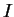 the illuminance 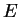 falling
normally onto a surface is
where 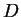 is the distance between source and the surface.
Figure 2:
Illumination from a point light source at the centre of the image.
| 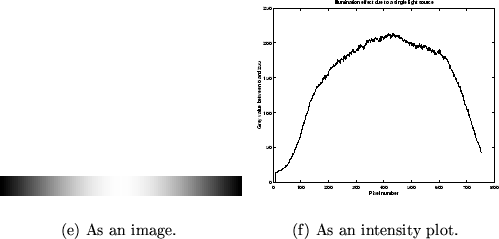 |
Figure 2 shows the illuminance due to a single point light
source at the centre of the image. The intensity of the illumination decreases
as we move away from the centre and the illumination is brightest at the
centre (Equation 1). It can be observed from Figure
2 that a single light source can
not produce uniform illumination. This implies that we need multiple light
sources positioned is space such that the combined effect produces uniform
illumination.
Figure 3:
Light placement.
| 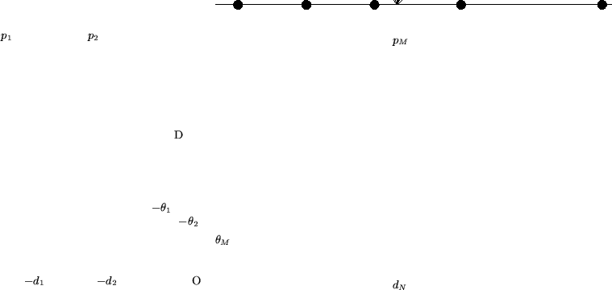 |
Consider the 1-D case where we are interested in obtaining uniform illumination
in one direction. Let the scene to be illuminated be at a distance from the light source and
let 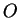 be a reference point
(Figure 3). Each point
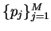 on the scene
be represented as an angle
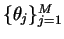 measured from the centre
. Consider 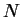 identical light
sources each having a luminous intensity positioned at
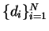.
Then at any point 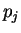 the illuminance due to the light sources
is given by (Appendix A)
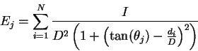
If uniform illuminance is required at all the scene points
, then
where the variance is given as
and
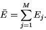
Solution of (2) results in the set 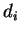 which are optimal in the sense of 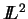 norm
for all (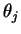).
We need to solve (2) for
.
One of the methods of solving (2) is to construct a set of algebraic
equations
by differentiating with
respect to
and solving the set of
non-linear equations (4) for
. While this
method is useful to find analytic closed form solutions it is seldom possible
to find the solution and hence we need to resort to iterative schemes for minimising
(2). Similarly we can show that the illumination at a point
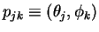 on a plane (2-D, Figure 4)
given light sources is
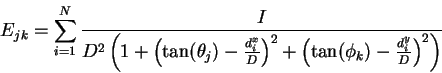
where,
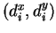 is the position of the 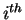 light source in a 2-D
plane.
The energy function to be minimised is given by
and
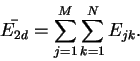
Figure 4:
Illustration of light placement in a plane.
| 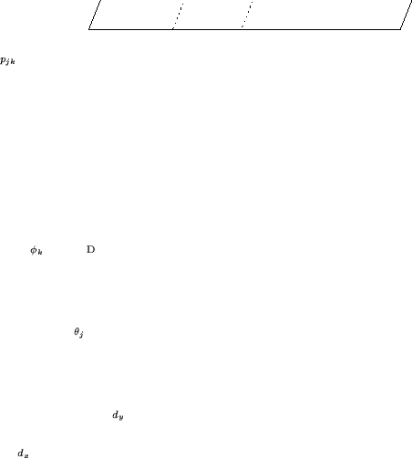 |
The energy function (3) and (5) are non-convex in
general and we need to use a global minimisation
algorithm. In our experiments we use the simulated annealing algorithm
[1] to find the global minimum.
In all our simulations we assume that the target scene is at distance of 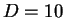 and further assume that we need uniform illumination between
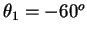 and
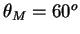 (1-D, Figure
3) and
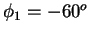 and 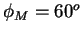
(2-D).
In all the results (figures) presented, the square
box (
) represents the initial choice of the position of
the light source (chosen at random between 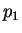 and 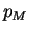 for 1-D and between
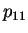 and 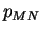 for 2-D case respectively) and the circles
() shows the final position of the light sources obtained minimising
(3) or (5).
Figure 5 shows the result of
minimising (3) using different number of light sources. Simulated annealing
algorithm was used for finding the minimum. The initial (random) and final
positions of the light sources and the effective illumination produced by the
final configuration of the light sources is shown for different number of light sources.
Table 1 gives the mean and variance of the illumination for
different number of light sources in 1-D. It can be observed that the optimum
position of the light sources is not symmetric and the variation in the
illumination due to the combined effect of light sources decreases with
increase in the number of light sources. The actual location of the light
sources obtained by minimising (3) is tabulated in Table
2 for different number of light sources.
Figure:
Uniform illumination using different number of light sources. The square
box (
) represents the initial choice of the position of
the light source (chosen at random between and )
and the circles
() shows the final position of the light sources obtained minimising
(3). The star (*) represents the points and .
| 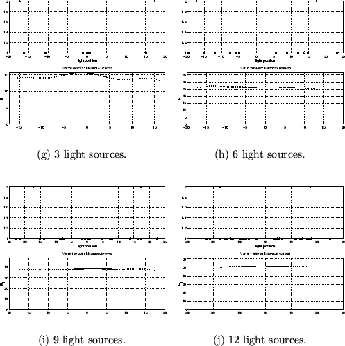 |
Table 1:
Mean and variance of illumination for different number of light
sources.
| light source |
illumination |
| (number) |
mean |
variance |
| 2 |
10.50 |
0.92 |
| 3 |
14.58 |
0.60 |
| 6 |
26.00 |
0.24 |
| 9 |
38.08 |
0.14 |
| 12 |
50.75 |
0.11 |
|
Table 2:
Location of light
sources obtained by minimising (3).
| light source |
light source |
| (number) |
(location) |
| 2 |
-10.19, 10.81 |
| 3 |
-16.28, -1.02, 15.06 |
| 6 |
-14.96, -19.71, -5.05, 13.82, 23.32 |
| 9 |
-22.81, -21.55, -15.09, -7.84, -0.69, 4.77, 13.81, 16.28, 22.45 |
| 12 |
-22.70, -21.29, -17.58, -13.19, -7.34, -3.45, 4.65, 5.45, 14.29, 17.32,
17.74, 25.02 |
|
Figure 6 shows the optimal location of different number of
light sources in a plane. The locations were obtained by
minimising (5) for different number of light sources. Also shown
is Figure 6 is the surface plot of the
effective illumination on a plane due to all the light sources. As can be
seen the effective illumination is more uniform with increasing number of
light sources. The column corresponding to variance in illumination in Table
3 captures this observation. Both for the 1-D and the 2-D
case the location of the light sources obtained by minimising the energy
function (3) or (5) are not symmetric. The results
presented (Figures 5 and
6) are for a random
initial location of the light sources. Experiments with different initial
location of the light sources produced similar mean and variance of
the effective illumination. The final location of the light source for
different initial conditions did not vary significantly.
Figure:
Uniform illumination using different number of light sources. The square
box (
) represents the initial choice of the position of
the light source (chosen at random between
and ) and the circles
() shows the final position of the light sources obtained minimising
(5).
|
Table 3:
Mean and variance of illumination for different number of light
sources.
| light source |
illumination |
| (number) |
mean |
variance |
| 6 |
13.02 |
1.09 |
| 9 |
18.08 |
0.85 |
| 12 |
25.34 |
0.74 |
|
We conducted experiments to check the validity of simulation results. The
experimental setup consisted of two halogen lamps each of 20 W power
driven by a 12 V power source. The camera (Sony Mavica) was placed at
the centre of the light sources. In the fist set of experiments the light
sources were places at a distance of 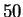 cms on either side of the
camera and the scene (a plain wall) distance was varied between cms
and 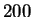 cms in steps of cms. In the second set of
experiments the lights were positioned cms on either side of the
camera and the scene distance was varied between and cms.
Table 4 gives the mean and the variance of the intensity over
a rectangular block of  pixels from the centre of the image.
pixels from the centre of the image.
Table 4:
Mean and variance of the intensity of the image using 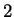 light sources.
| (in cms) |
50 |
100 |
150 |
200 |
intensity |
| 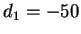 cms |
37.86 |
116.78 |
133.15 |
46.28 |
variance |
| 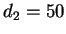 cms |
145.66 |
138.08 |
127.14 |
99.34 |
mean |
| 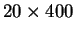 cms |
431.97 |
784.5 |
103.88 |
108.93 |
variance |
| 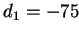 cms |
123.64 |
123.1 |
88.9 |
78.0 |
mean |
|
It can be observed that the variation of the intensity of the image when the
light sources are at a distance of cms ( cms; cms) on either side of the camera
is minimum (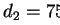)when the scene is at a distance of 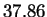 cms from
the the camera. Similarly the variation of the intensity is lowest for 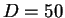 when the light sources are at ( cms; cms). These results are consistent with the simulation results
(Table 2 for light sources with the scene at a distance
of m). Figure 7 shows some real images
obtained with two
light sources (as described above) each placed cms on either side
of the camera for varying scene distances (). In each case the left image is
the original image and the right image is the k-means segmented image. It can
be seen that the segmentation is best when the scene is at a distance of
cms at the centre of the image which is consistent with the
simulation results presented in Table 2 (first row).
While the segmentation is poor
when or cms with the centre of the image being labelled
as different segments. While the segmentation at the centre of the image is
good for cms the mean intensity is small (see Table
4) compared to the mean intensity when cms.
Figure 7:
The original and k-means segmented images of the scene at varying
distances () with the light sources at cms and cms.
|
External lighting is essential to maintain non-varying and uniformly
illuminated environment which is a common requirement in many
real time machine vision applications.
Non-uniform lighting can affect the robustness of
the low-level image processing algorithms which are an essential first step in
any machine vision application. In this paper we give a design procedure to
determine the position of the light sources which results in an uniform
illumination of the scene.
The problem of identifying the
location of multiple sources of light to produce uniform illumination
is posed as a minimisation problem. We have developed a scheme
based on simulated annealing algorithm to determine the optimal position of the
light sources. We have justified the simulation results by measuring the
variation of the image intensity of real images obtained experimentally.
Illumination due to multiple light sources
Consider two light sources each of
luminous intensity at a distance and respectively from the
centre . Let be the scene point which is at an angular
distance from . Now we calculate the illumination at the point
due to the two light sources at and .
Figure 8:
Illumination due to two light sources.
|
Now the illumination at point is the sum of illumination due to the two
light sources at and , namely
where,
and
Or
|
 |
|
|
| |
|
|
(6) |
This can be generalised and the illumination at for light sources can
be written as
- 1
-
E. Aarts and J. Korst.
Simulated annealing and Boltzmann machines.
John Wiley, 1989.
- 2
-
A. Cameron and H. F. Durrant-Whyte.
A Bayesian approach to optimal sensor placement.
International Journal of Robotics Research, 9(5):70-88, 1990.
- 3
-
C. K. Cowan.
Automatic camera and light-source placement using CAD models.
In Workshop on Directions in Automated CAD-Based Vision, pages
22-31, 1991.
- 4
-
C. K. Cowan and P. D. Kovesi.
Automatic sensor placement from vision task requirements.
IEEE Tran. on Pattern Analysis and Machine Intelligence,
10(3):407-416, May 1988.
- 5
-
C. K. Cowan, B. Modayur, and J. L. DeCurtins.
Automatic light-source placement for detecting object features.
In Proceedings of SPIE, volume 1826, pages 397-408, 1992.
- 6
-
G. D. Hager and M. Mintz.
Automatic sensor search and positioning for geometric tasks.
In Advances in Spatial Reasoning, volume II, page Ch. 4, 1990.
- 7
-
S. Li, R. M. Haralick, and L. G. Shapiro.
Optimal sensor and light source positioning for machine vision.
Computer Vision and Image Processing, 61(1):122-137, January
1995.
- 8
-
Y. Linde, A. Buzo, and R. M. Gray.
``An algorithm for vector quantization design''.
IEEE Trans. Communictions, 28:84-95, 1980.
- 9
-
S. O. Mason and A. Grun.
Automatic sensor placement for accurate dimensional inspection.
Computer Vision and Image Understanding, 61(3):454-467, May
1995.
- 10
-
S. Mersch.
Overview of machine vision lighting techniques.
Proceedings of SPIE, 728:36-38, 1987.
- 11
-
E. J. Sieczka and G. K. Harding.
Light source design for machine vision.
Proceedings of SPIE, 1614:2-10, November 1991.
- 12
-
H. Zhang.
2-Dimensional optimal sensor placement.
IEEE Tran. on Systems Man and Cybernetics, 25(5):781-792, May
1995.
Sunil Kopparapu
2001-08-20